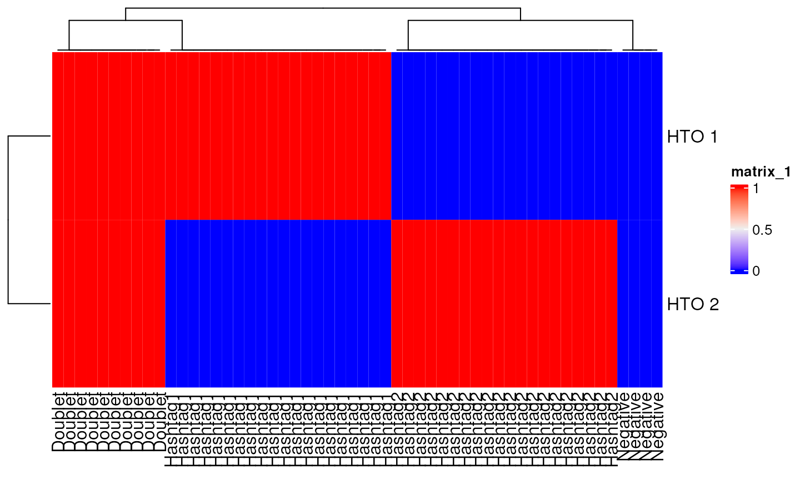
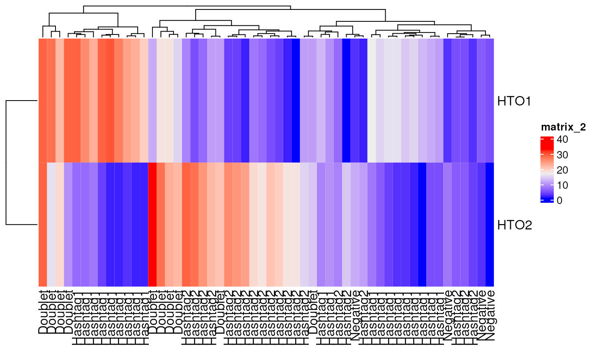

vignettes/hashing_benchmarking.Rmd
hashing_benchmarking.Rmd
library(demuxSNP)
library(ComplexHeatmap)
library(viridisLite)
library(ggpubr)
library(dittoSeq)
library(utils)
library(EnsDb.Hsapiens.v86)Testing algorithms on real data is a key step to evaluating their true performance. Real data includes nuances and factors which may not have been foreseen when developing the algorithm. However, in scRNAseq, the cost associated with running benchmark limits the amount of suitable benchmarking data. To overcome this, with the added benefit of hindsight, we simulate data to examine algorithm performance under specific conditions, mostly around reducing hashing quality.
short example:
mat<-logimat(ngroups=2,nsinglet=c(20,20),ndoub=10,nneg=4)
library(ComplexHeatmap)
Heatmap(mat)
counts<-draw_counts(size_sig=10,size_bg = 10,mu_sig = rep(20,2),mu_bg = rep(5,2),mat=mat,seed=1)
Heatmap(counts)
sessionInfo()
#> R version 4.3.1 (2023-06-16)
#> Platform: x86_64-pc-linux-gnu (64-bit)
#> Running under: Ubuntu 22.04.2 LTS
#>
#> Matrix products: default
#> BLAS: /usr/lib/x86_64-linux-gnu/openblas-pthread/libblas.so.3
#> LAPACK: /usr/lib/x86_64-linux-gnu/openblas-pthread/libopenblasp-r0.3.20.so; LAPACK version 3.10.0
#>
#> locale:
#> [1] LC_CTYPE=en_US.UTF-8 LC_NUMERIC=C
#> [3] LC_TIME=en_US.UTF-8 LC_COLLATE=en_US.UTF-8
#> [5] LC_MONETARY=en_US.UTF-8 LC_MESSAGES=en_US.UTF-8
#> [7] LC_PAPER=en_US.UTF-8 LC_NAME=C
#> [9] LC_ADDRESS=C LC_TELEPHONE=C
#> [11] LC_MEASUREMENT=en_US.UTF-8 LC_IDENTIFICATION=C
#>
#> time zone: UTC
#> tzcode source: system (glibc)
#>
#> attached base packages:
#> [1] grid stats4 stats graphics grDevices utils datasets
#> [8] methods base
#>
#> other attached packages:
#> [1] EnsDb.Hsapiens.v86_2.99.0 dittoSeq_1.12.0
#> [3] ggpubr_0.6.0 ggplot2_3.4.2
#> [5] viridisLite_0.4.2 ComplexHeatmap_2.16.0
#> [7] demuxSNP_0.99.10 ensembldb_2.24.0
#> [9] AnnotationFilter_1.24.0 GenomicFeatures_1.52.0
#> [11] AnnotationDbi_1.62.1 VariantAnnotation_1.46.0
#> [13] Rsamtools_2.16.0 Biostrings_2.68.1
#> [15] XVector_0.40.0 SingleCellExperiment_1.22.0
#> [17] SummarizedExperiment_1.30.2 Biobase_2.60.0
#> [19] GenomicRanges_1.52.0 GenomeInfoDb_1.36.0
#> [21] IRanges_2.34.0 S4Vectors_0.38.1
#> [23] BiocGenerics_0.46.0 MatrixGenerics_1.12.2
#> [25] matrixStats_1.0.0
#>
#> loaded via a namespace (and not attached):
#> [1] RColorBrewer_1.1-3 jsonlite_1.8.5 shape_1.4.6
#> [4] magrittr_2.0.3 rmarkdown_2.22 GlobalOptions_0.1.2
#> [7] fs_1.6.2 BiocIO_1.10.0 zlibbioc_1.46.0
#> [10] ragg_1.2.5 vctrs_0.6.3 memoise_2.0.1
#> [13] RCurl_1.98-1.12 rstatix_0.7.2 htmltools_0.5.5
#> [16] S4Arrays_1.0.4 progress_1.2.2 curl_5.0.1
#> [19] broom_1.0.5 sass_0.4.6 bslib_0.5.0
#> [22] desc_1.4.2 demuxmix_1.2.0 cachem_1.0.8
#> [25] GenomicAlignments_1.36.0 lifecycle_1.0.3 iterators_1.0.14
#> [28] pkgconfig_2.0.3 Matrix_1.5-4.1 R6_2.5.1
#> [31] fastmap_1.1.1 GenomeInfoDbData_1.2.10 clue_0.3-64
#> [34] digest_0.6.31 colorspace_2.1-0 rprojroot_2.0.3
#> [37] textshaping_0.3.6 RSQLite_2.3.1 filelock_1.0.2
#> [40] fansi_1.0.4 abind_1.4-5 httr_1.4.6
#> [43] compiler_4.3.1 bit64_4.0.5 withr_2.5.0
#> [46] doParallel_1.0.17 backports_1.4.1 BiocParallel_1.34.2
#> [49] carData_3.0-5 DBI_1.1.3 highr_0.10
#> [52] ggsignif_0.6.4 biomaRt_2.56.1 MASS_7.3-60
#> [55] rappdirs_0.3.3 DelayedArray_0.26.3 rjson_0.2.21
#> [58] tools_4.3.1 glue_1.6.2 restfulr_0.0.15
#> [61] cluster_2.1.4 generics_0.1.3 gtable_0.3.3
#> [64] BSgenome_1.68.0 class_7.3-22 tidyr_1.3.0
#> [67] hms_1.1.3 car_3.1-2 xml2_1.3.4
#> [70] utf8_1.2.3 ggrepel_0.9.3 foreach_1.5.2
#> [73] pillar_1.9.0 stringr_1.5.0 circlize_0.4.15
#> [76] dplyr_1.1.2 BiocFileCache_2.8.0 lattice_0.21-8
#> [79] rtracklayer_1.60.0 bit_4.0.5 tidyselect_1.2.0
#> [82] knitr_1.43 gridExtra_2.3 ProtGenerics_1.32.0
#> [85] xfun_0.39 pheatmap_1.0.12 stringi_1.7.12
#> [88] lazyeval_0.2.2 yaml_2.3.7 evaluate_0.21
#> [91] codetools_0.2-19 tibble_3.2.1 cli_3.6.1
#> [94] systemfonts_1.0.4 munsell_0.5.0 jquerylib_0.1.4
#> [97] Rcpp_1.0.10 dbplyr_2.3.2 png_0.1-8
#> [100] XML_3.99-0.14 parallel_4.3.1 pkgdown_2.0.7
#> [103] blob_1.2.4 prettyunits_1.1.1 bitops_1.0-7
#> [106] ggridges_0.5.4 scales_1.2.1 purrr_1.0.1
#> [109] crayon_1.5.2 combinat_0.0-8 GetoptLong_1.0.5
#> [112] rlang_1.1.1 cowplot_1.1.1 KEGGREST_1.40.0